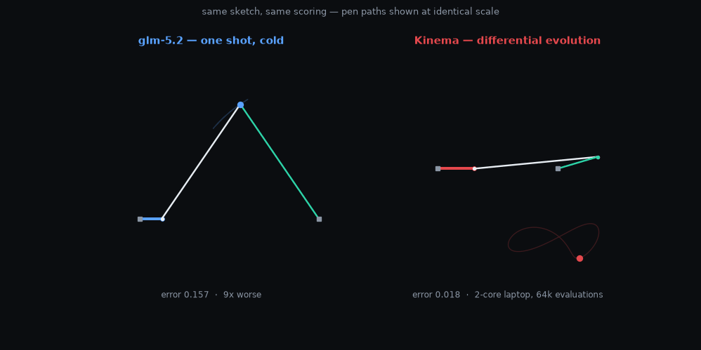
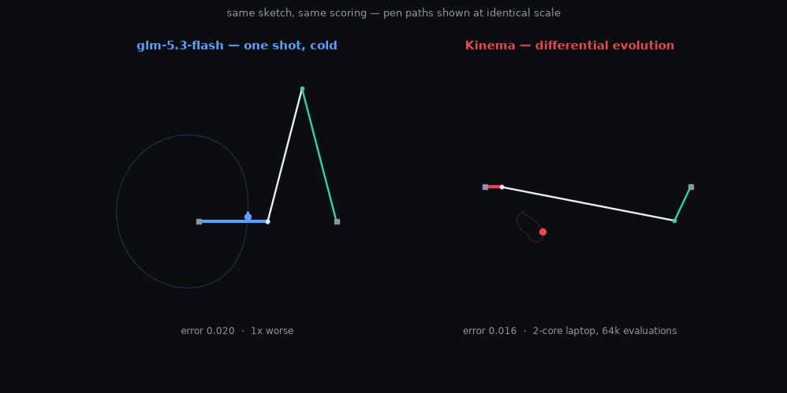
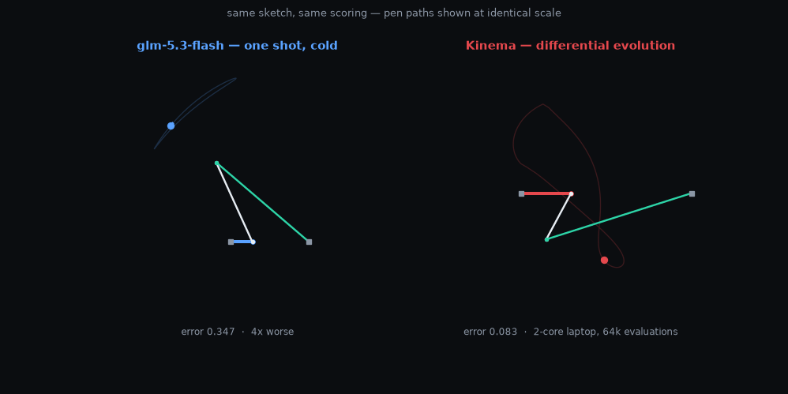
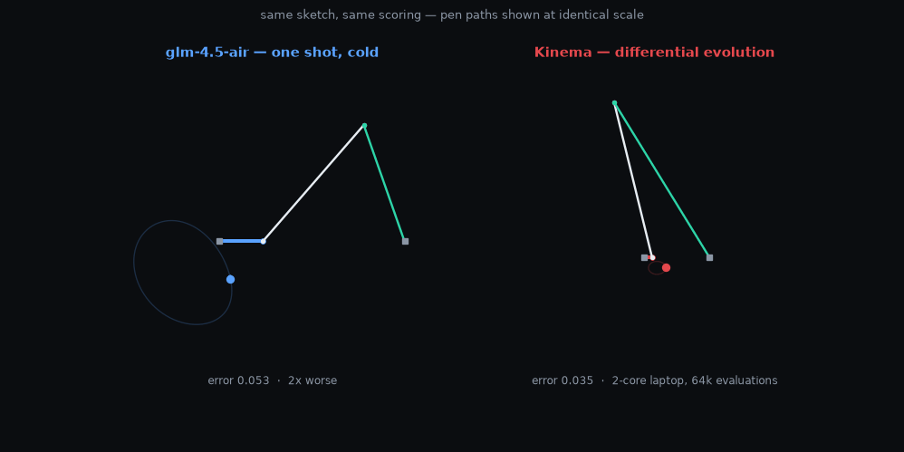
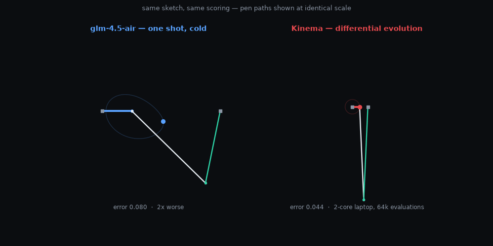
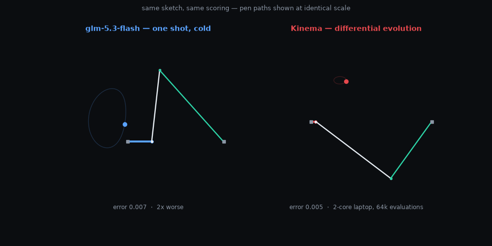
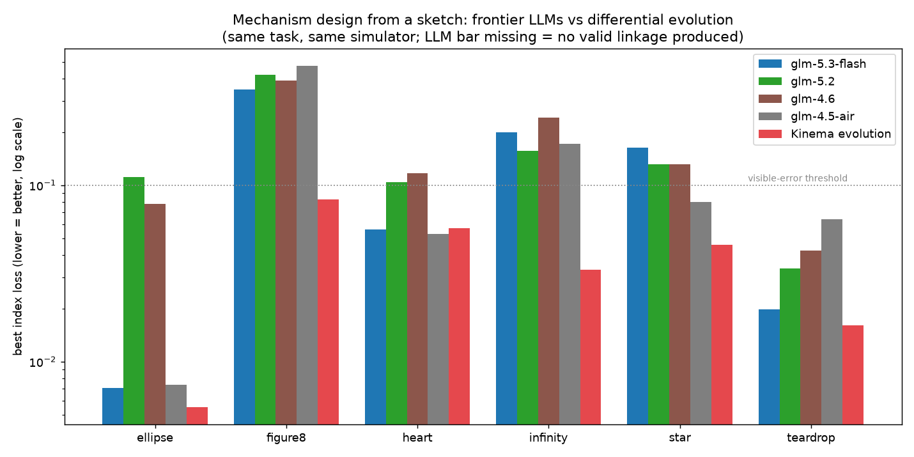
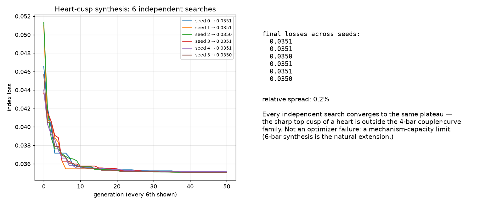

Everyone gets the same task: "here is a closed curve — output the 7 parameters of a 4-bar crank-rocker linkage whose pen traces it." Everyone is scored by the exact same simulator (mean squared gap between pen path and sketch; lower is better). 72 real model calls + an identically-budgeted evolutionary search on a 2012 dual-core laptop. All models are GLM-family; no other vendors were tested.
| competitor | best attempt (mean over 6 targets) | mean attempt | median attempt | valid linkages |
|---|---|---|---|---|
| Kinema evolution (fixed budget) | 0.0400 | 0.0400 | 0.0395 | 6/6 |
| z-ai/glm-5.3-flash | 0.1320 | 0.7887 | 0.2100 | 17/18 |
| z-ai/glm-4.5-air | 0.1421 | 2.3940 | 1.8655 | 14/18 |
| z-ai/glm-5.2 | 0.1601 | 0.2854 | 0.2992 | 18/18 |
| z-ai/glm-4.6 | 0.1670 | 0.2201 | 0.2154 | 18/18 |
Evolution wins every target. The typical LLM attempt is 7–170x worse than that model's own best attempt. glm-4.5-air produced a linkage violating Grashof's law (it would physically jam) in 4 of 18 attempts.







With the simulator in the loop (each model sees its own pen path, its numeric error, and WHICH constraint it violated, for 4 rounds), the models do not close the gap — feedback frequently makes the next attempt worse. Numeric geometry is a language they do not steer by.
Seeding the evolutionary population with 5 LLM proposals (10% compute budget) matches the full-budget baseline on most targets — but so does pure random initialization. The LLM's contribution is statistically invisible; evolution is the load-bearing component.

Six independent searches on a heart shape converge to the same error within 0.2% — the sharp cusp is outside the 4-bar family's vocabulary. The engine knows what it cannot draw.
Prompts, per-attempt raw scores, scoring simulator and
arms live in the repo: github.com/snehalvartak/kinema
— see benchmark/results.json, benchmark/run_benchmark.py, benchmark/feedback_arm.py.